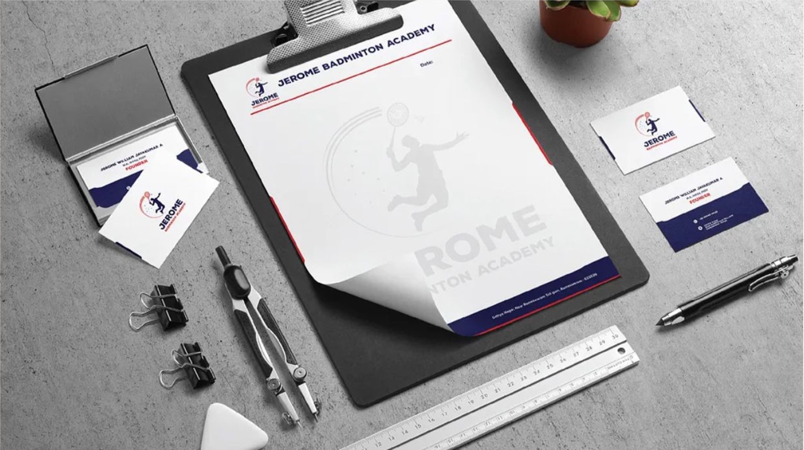

Brand identity
Jerome
Energy, movement, and precision for Jerome Badminton Academy.

01 / PURPOSE & CONCEPT
An identity in motion.
A dynamic, professional identity for a training academy for aspiring athletes. A bold player-in-action logo and a clean visual language capture the discipline and performance at the heart of the brand.
02 / DESIGN APPROACH
The visual language.
A blue-and-red palette combines trust and focus with passion and vitality. Circular motion lines bring momentum to the badminton-player silhouette. Clean typography, structured layouts, and custom iconography unify business cards, letterheads, and stationery.
03 / RESULT
A consistent brand presence.
A contemporary identity that presents the academy as a trusted, inspiring place to train. Consistent branding across print and digital touchpoints conveys movement, dedication, and excellence.
04 / WHY THIS DIRECTION
Show the sport, then the ambition.
A badminton player in motion makes the academy’s focus immediately apparent. Circular lines reinforce movement and give the silhouette a sense of momentum. Blue provides a composed foundation and red adds energy, balancing the discipline of training with the excitement of competition.
05 / CRITICAL REASONING
Balance expression with legibility.
An action-based logo carries more detail than a simple wordmark. The player and motion lines must not compete with the academy name, especially on business cards or small digital placements. Keeping the surrounding typography and layouts restrained gives the symbol room to communicate. Watermarks should stay light enough to preserve the readability of correspondence.
06 / ACROSS APPLICATIONS
A professional first impression.
Consistent business cards, letterheads, and stationery make the academy’s everyday communication feel connected. The visual system supports recognition through repeated placement, colour, and typography rather than adding sporting imagery to every surface.